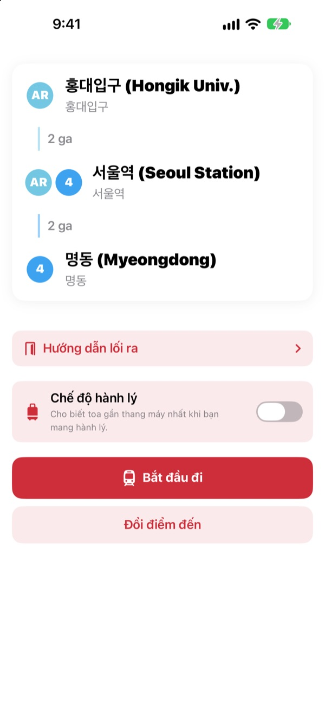
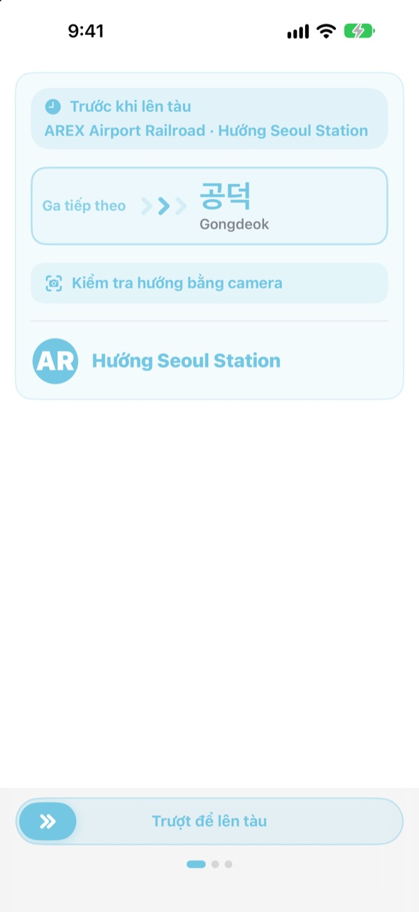
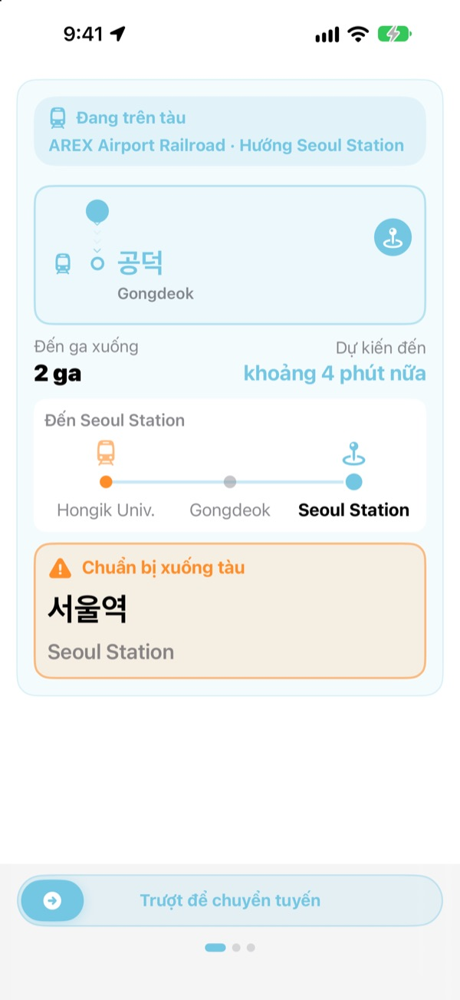
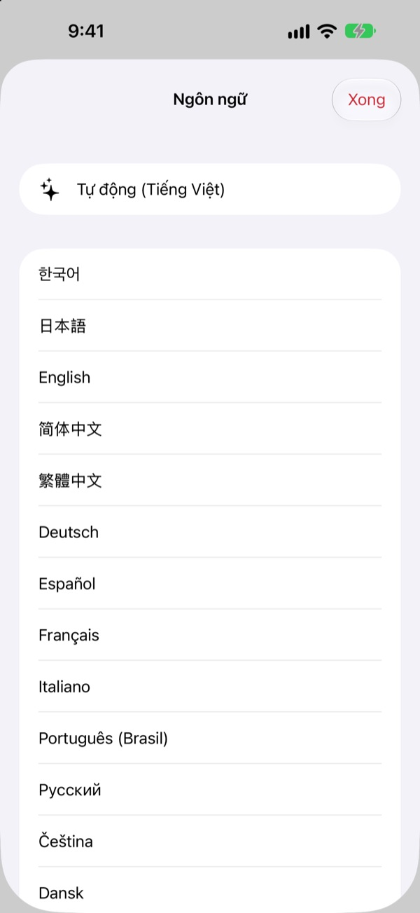

Đúng sân ga.
Đúng ga xuống.
Chọn ga đi và ga đến, KORA cho bạn biết lên chuyến nào, ghi đúng như trên biển ở sân ga. Khi đang đi, ứng dụng theo dõi bạn đang ở ga nào và báo khi đến lúc xuống.
Tìm đường, hướng tàu và giờ tàu đến theo thời gian thực đều miễn phí.

Thử đi một chuyến
Bạn đang ở ga Hongik Univ. trên tuyến AREX. Chọn ga muốn xuống rồi chạm Bắt đầu đi để xem hướng tàu và lời nhắc xuống tàu, giống hệt trong ứng dụng.
Đã bao giờ bạn đứng ở sân ga mà không biết lên chuyến nào?
Ứng dụng bản đồ chỉ cho bạn tuyến, còn ở sân ga chỉ có những tấm biển ghi tên ga bạn chưa từng nghe. Lên nhầm chiều là phải quay lại mấy ga. Lỡ nghe thông báo là đi quá ga. KORA gọi chuyến tàu của bạn đúng như tấm biển và báo trước khi đến ga của bạn.
Đúng như chữ trên biển
Chuyến tàu cần lên hiện đúng như điểm đến ghi ở sân ga và trên thân tàu. Vẫn chưa chắc? Hướng camera vào biển ở sân ga hoặc bảng điểm đến của tàu, KORA sẽ cho biết ngay đúng chiều hay không.
Việc nhận dạng chữ diễn ra hoàn toàn trên iPhone của bạn.

Không còn đi quá ga
KORA kết hợp giờ tàu đến theo thời gian thực, GPS, lúc tàu chạy và dừng, cùng thông báo trên tàu để biết bạn đang ở đâu. Khi gần đến ga, bạn nhận “Chuẩn bị xuống tàu”, rồi “Xuống ngay!”, kèm rung.
Tiến trình chuyến đi còn hiện trên Màn hình khóa và Dynamic Island.

23 ngôn ngữ, giữ nguyên tên tiếng Hàn
Dùng toàn bộ ứng dụng bằng 23 ngôn ngữ, mặc định theo ngôn ngữ iPhone. Tên ga hiện bằng tiếng Hàn bên cạnh cách viết Latinh trên biển ga, nên bạn dễ đối chiếu ngay tại sân ga.

Bắt đầu với ba bước
- 1
Chọn ga đi
GPS tìm ga gần nhất, hoặc bạn tự chọn.
- 2
Chọn ga đến
Chuyển tuyến, số ga và chuyến cần lên hiện ra ngay.
- 3
Chạm Bắt đầu đi
Màn hình và rung sẽ báo khi bạn cần xuống.
Mỗi quyền dùng để làm gì
- Vị trí
- Tìm ga gần nhất
- Camera
- Đọc biển sân ga và bảng điểm đến để kiểm tra hướng
- Micrô và nhận dạng giọng nói
- Nghe tên ga và phía cửa mở trong thông báo trên tàu
- Chuyển động & thể chất
- Nhận biết lúc tàu chạy và dừng để xác định ga hiện tại chính xác hơn
Mọi quyền đều không bắt buộc. Không cấp quyền, bạn vẫn tự chọn ga và có chỉ đường cùng lời nhắc xuống tàu. Vị trí, camera và thông báo chỉ được xử lý trên thiết bị, không bao giờ được ghi âm, lưu hay gửi đi.
Tìm đường luôn miễn phí. Dẫn đường khi đi tàu có trong KORA Pro.
Miễn phí
- Tìm đường và chuyển tuyến
- Biển điểm đến của chuyến tàu cần lên
- Giờ tàu đến theo thời gian thực
- Kiểm tra hướng bằng camera
- Ga hiện tại và lời nhắc xuống tàu trên màn hình
- Mọi tính năng Pro trong ba chuyến đi đầu tiên
KORA Pro
- Mỗi chuyến đi: dẫn đường trên Màn hình khóa, nhận dạng thông báo và rung khi xuống
- Hướng dẫn lối ra: địa điểm quanh từng lối ra của tuyến 1–8 ở Seoul
- Nhắc chuyến tàu cuối của tuyến 1–9
- Chế độ hành lý: toa gần thang máy nhất trên tuyến 1–8
Trả một lần, dùng mãi. Không phải gói đăng ký.
Hết lượt miễn phí bạn vẫn đi tàu bình thường. Tiến trình trên màn hình vẫn còn; chỉ Màn hình khóa, nhận dạng thông báo và rung tạm dừng.
Câu hỏi thường gặp
Ứng dụng không tìm thấy ga của tôi hoặc hiện sai ga.
Vào Cài đặt > Quyền riêng tư & Bảo mật > Dịch vụ định vị > KORA, chọn “Khi dùng ứng dụng” và bật “Vị trí chính xác”. Dưới lòng đất hay trong tòa nhà lớn, GPS có thể lệch: chạm vào thẻ ga hiện tại ở trên cùng và tự chọn. Mọi tính năng vẫn dùng được khi không cấp quyền vị trí.
Dùng kiểm tra hướng bằng camera thế nào?
Khi lộ trình hiện ra, mở kiểm tra hướng bằng camera và để biển ở sân ga hoặc bảng điểm đến của tàu chiếm trọn khung hình. Chữ tiếng Hàn cho kết quả chính xác nhất. Nếu biển tối, xa hoặc quá nghiêng, hãy lại gần và hướng thẳng. Kết quả chỉ để tham khảo, nếu phân vân hãy xem thêm biển chỉ dẫn trong ga.
Không thấy giờ tàu đến theo thời gian thực.
Dữ liệu đến từ Seoul Open Data Plaza, cần kết nối mạng và chủ yếu có cho các tuyến vùng thủ đô Seoul. Khi không có mạng hoặc dữ liệu, KORA tự chuyển sang ước tính theo lịch chạy, GPS và cảm biến gia tốc, và vẫn tiếp tục dẫn đường. Tìm đường không cần mạng.
Lời nhắc xuống tàu đến hơi sớm hoặc hơi muộn.
Dưới lòng đất sóng GPS yếu nên ga hiện tại có thể chậm cập nhật. Khi bạn cho phép micrô, KORA dùng thông báo trên tàu để chỉnh lại vị trí. Lời nhắc chỉ để tham khảo, hãy nghe thêm thông báo và nhìn biển ga.
Đổi ngôn ngữ thế nào?
KORA mặc định theo ngôn ngữ iPhone. Chạm và giữ thẻ ga trên màn hình chính (ga hiện tại hoặc ga đến) để mở phần chọn ngôn ngữ, rồi chọn trong 23 ngôn ngữ.
Hoạt động trực tiếp không hiện trên Màn hình khóa.
Kiểm tra trong Cài đặt > Ứng dụng > KORA (iOS cũ: Cài đặt > KORA) xem Hoạt động trực tiếp đã bật chưa. Nó xuất hiện khi bạn bắt đầu dẫn đường chuyến đi và kết thúc nếu bạn đóng hẳn ứng dụng. Dynamic Island chỉ có trên các mẫu iPhone hỗ trợ.
Hỗ trợ những thành phố nào?
Khoảng 930 ga ở vùng thủ đô Seoul (Seoul, Gyeonggi và Incheon, gồm GTX-A, AREX, tuyến Shinbundang và đường sắt nhẹ), Busan, Daegu, Gwangju và Daejeon. Đổi thành phố bằng các nút khu vực ở đầu màn hình chọn ga.
Có thể dùng thử trước chuyến đi không?
Có. Tự chọn ga đi và ga đến, bạn xem được lộ trình, chuyển tuyến và hướng tàu từ bất cứ đâu trên thế giới.
KORA Pro có phải gói đăng ký không?
Không. Đây là mua một lần và dùng mãi, dùng được với Chia sẻ trong gia đình. Nếu cài lại ứng dụng, hãy chạm Khôi phục giao dịch mua trên màn hình Pro.
Dữ liệu của tôi được xử lý ra sao?
Không cần tài khoản, không có quảng cáo. Vị trí, camera và nhận dạng thông báo được xử lý trên thiết bị, không bao giờ được lưu hay gửi đi. Chúng tôi chỉ thu thập thống kê sử dụng ẩn danh để cải thiện ứng dụng.
Ứng dụng có hỗ trợ trợ năng không?
KORA hỗ trợ VoiceOver và cỡ chữ lớn. Mọi góp ý để cải thiện trợ năng luôn được hoan nghênh.
Thiếu ga, tên ga lạ hay có câu hỏi khác? Hãy gửi về mizzking75@gmail.com. Ghi kèm phiên bản ứng dụng, mẫu iPhone và các ga bạn đã đi để chúng tôi kiểm tra nhanh hơn.